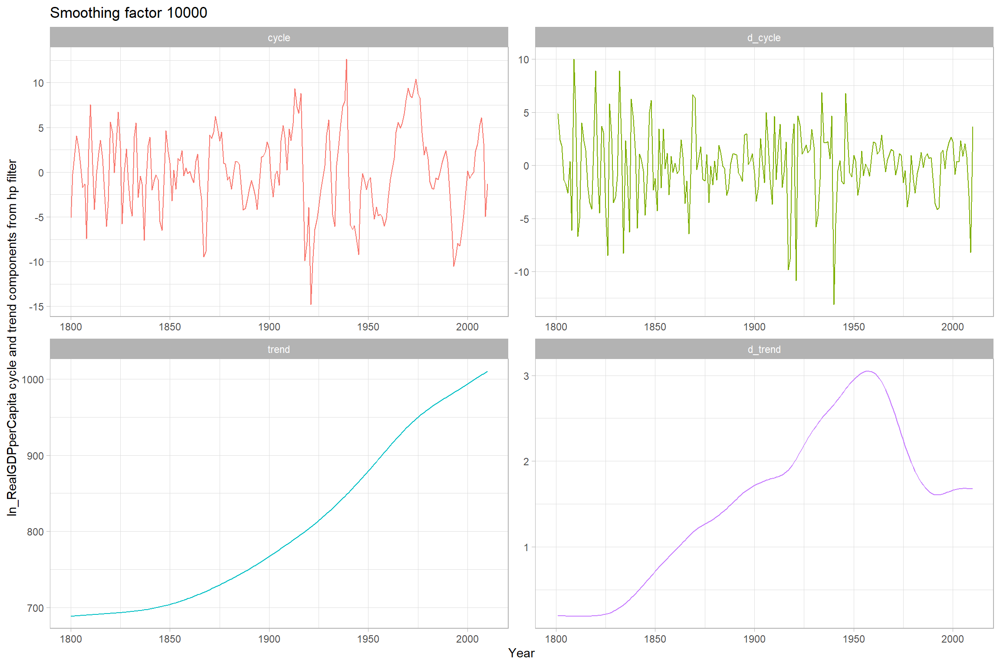

library(tidyverse)
theme_set(theme_light())
df <- readxl::read_excel(here::here("course-content/Class 2/Swedish Real GDP per Capita, 1800-2010.xlsx"))
df <- df %>%
janitor::clean_names()
df <- df %>%
mutate(ln_real_gdp_per_capita = log(real_gdp_per_capita)*100)Swedish Real GDP per Capita, 1800-2010
Purpose
Translate the code from session 2 to R.
Read in data
EDA
df %>%
ggplot(aes(year, real_gdp_per_capita)) +
geom_point() +
geom_line()
df %>%
ggplot(aes(year, ln_real_gdp_per_capita)) +
geom_point() +
geom_line()Reproduce Figure 5
In the function below we do a number of things
I walk through each:
We have two inputs, the smoothing factor,
sfand a label calledlabel.From the mFilter library we call hpfilter on the logged version of the real gdp series. We supply the smoothing factor with command
freq = sf. This is assigned to hp as an mFilter list object.We create a tibble from this object which is easier to work with.
We create our differenced variables for the cycle and trend components.
We save this tibble as an RDS file with the label we provide as an argument to the function.
We then plot the series components as a ggplot, faceting by the components.
# tsfilter hp HP_Cycle_100 = ln_RealGDPperCapita, smooth(100) trend(HP_Trend_100)
library(mFilter)
plot_hp_filter <- function(sf, label) {
message("Plotting HP filtered series with smoothing factor ", sf)
hp <- mFilter::hpfilter(df$ln_real_gdp_per_capita, freq = sf)
df_hp <- tibble(
year = df$year,
cycle = hp$cycle,
# don't know why this is hp$trend[,1]?
trend = hp$trend[, 1]
)
df_hp <- df_hp %>%
mutate(
d_cycle = cycle - lag(cycle),
d_trend = trend - lag(trend),
reg = label
)
df_hp %>% write_rds(here::here(paste0("replication-in-R/Class 2/", label, ".rds")))
df_hp %>%
pivot_longer(cycle:d_trend) %>%
# this puts the facets in a nice order
mutate(name = fct_relevel(name, "d_trend", after = 3L)) %>%
ggplot(aes(year, value, colour = name)) +
geom_line(show.legend = F) +
facet_wrap(~name, nrow = 2, scales = "free") +
labs(
x = "Year",
y = "ln_RealGDPperCapita cycle and trend components from hp filter",
title = paste0("Smoothing factor ", sf)
)
}plot_hp_filter(100, "hp_100")
Reproduce figure 6
# tsfilter hp HP_Cycle_10000 = ln_RealGDPperCapita, smooth(10000) trend(HP_Trend_10000)
plot_hp_filter(1000, "hp_1000")Comparison
# tsfilter hp HP_Cycle_6 = ln_RealGDPperCapita, smooth(6.25) trend(HP_Trend_6)
plot_hp_filter(6.25, "hp_6_25")Regression smoothing
Here we use our mutate command to create the variables we will need for the quadratic regression and the Hamilton filter.
df <- df %>%
mutate(year_2 = year^2,
l2_ln_real_gdp_per_capita = lag(ln_real_gdp_per_capita, n = 2))Now we create a function that will take a list of variables and a label. It does a regression, prints a summary of the regression and then makes a plot of the original logged series and a trend line created from the coefficients in the regression.
augment_reg <- function(var, label) {
df_temp <- df %>%
select(ln_real_gdp_per_capita, {{ var }})
reg <- lm(ln_real_gdp_per_capita ~ ., data = df_temp)
summary <- reg %>% summary()
df_reg <- reg %>%
broom::augment() %>%
mutate(
trend = .fitted,
cycle = .resid,
d_cycle = cycle - lag(cycle),
d_trend = trend - lag(trend),
reg = label
)
df_reg %>% write_rds(here::here(paste0("replication-in-R/Class 2/", label, ".rds")))
plot <- df_reg %>%
pivot_longer(cols = c(ln_real_gdp_per_capita, trend)) %>%
ggplot(aes(year, value, colour = name)) +
geom_line()
out <- list(summary, plot)
return(out)
}OLS
Linear
The linear regression obviously produces a nice straight regression line.
# reg ln_RealGDPperCapita Year
# predict OLS_Lin_Trend, xb
# predict OLS_Lin_Cycle, res
augment_reg(year, "linear_reg")[[1]]
Call:
lm(formula = ln_real_gdp_per_capita ~ ., data = df_temp)
Residuals:
Min 1Q Median 3Q Max
-43.270 -24.553 -4.986 24.971 59.570
Coefficients:
Estimate Std. Error t value Pr(>|t|)
(Intercept) -2432.0502 57.3685 -42.39 <2e-16 ***
year 1.7003 0.0301 56.49 <2e-16 ***
---
Signif. codes: 0 '***' 0.001 '**' 0.01 '*' 0.05 '.' 0.1 ' ' 1
Residual standard error: 26.63 on 209 degrees of freedom
Multiple R-squared: 0.9385, Adjusted R-squared: 0.9382
F-statistic: 3191 on 1 and 209 DF, p-value: < 2.2e-16
[[2]]Quadratic
The quadratic regression produces a lovely parabolic shape.
# gen Year2 = Year^2
# reg ln_RealGDPperCapita Year Year2
# predict OLS_Nonlin_Trend, xb
# predict OLS_Nonlin_Cycle, res
augment_reg(c(year, year_2), "quadratic_reg")[[1]]
Call:
lm(formula = ln_real_gdp_per_capita ~ ., data = df_temp)
Residuals:
Min 1Q Median 3Q Max
-32.283 -5.950 -1.446 6.157 26.128
Coefficients:
Estimate Std. Error t value Pr(>|t|)
(Intercept) 2.426e+04 7.781e+02 31.18 <2e-16 ***
year -2.636e+01 8.175e-01 -32.24 <2e-16 ***
year_2 7.364e-03 2.145e-04 34.32 <2e-16 ***
---
Signif. codes: 0 '***' 0.001 '**' 0.01 '*' 0.05 '.' 0.1 ' ' 1
Residual standard error: 10.34 on 208 degrees of freedom
Multiple R-squared: 0.9908, Adjusted R-squared: 0.9907
F-statistic: 1.117e+04 on 2 and 208 DF, p-value: < 2.2e-16
[[2]]Hamilton
For yearly data: yt+2 = β0 + β1yt + ut+2.
I think this is wrong though?
# reg ln_RealGDPperCapita L2.ln_RealGDPperCapita
# predict Ham_Trend, xb
# predict Ham_Cycle, res
lm_hamilton <- lm(ln_real_gdp_per_capita ~ l2_ln_real_gdp_per_capita, data = df)
lm_hamilton %>%
summary()
Call:
lm(formula = ln_real_gdp_per_capita ~ l2_ln_real_gdp_per_capita,
data = df)
Residuals:
Min 1Q Median 3Q Max
-17.9392 -2.8542 0.4106 3.2793 13.4767
Coefficients:
Estimate Std. Error t value Pr(>|t|)
(Intercept) -4.705552 2.759536 -1.705 0.0897 .
l2_ln_real_gdp_per_capita 1.009656 0.003399 297.059 <2e-16 ***
---
Signif. codes: 0 '***' 0.001 '**' 0.01 '*' 0.05 '.' 0.1 ' ' 1
Residual standard error: 5.189 on 207 degrees of freedom
(2 observations deleted due to missingness)
Multiple R-squared: 0.9977, Adjusted R-squared: 0.9976
F-statistic: 8.824e+04 on 1 and 207 DF, p-value: < 2.2e-16df_lm_hamilton <- lm_hamilton %>%
broom::augment() %>%
bind_cols(df %>%
select(year) %>%
tail(209)) %>%
select(-.rownames)
df_lm_hamilton %>%
mutate(reg = "hamilton") %>%
mutate(
trend = .fitted,
cycle = .resid,
d_cycle = cycle - lag(cycle),
d_trend = trend - lag(trend),
) %>%
write_rds(here::here(paste0("replication-in-R/Class 2/", "hamilton", ".rds")))df_lm_hamilton %>%
pivot_longer(cols = c(ln_real_gdp_per_capita, .fitted)) %>%
ggplot(aes(year, value, colour = name)) +
geom_line()Comparison
Read in all of the data
filelist <- list.files(here::here(paste0("replication-in-R/Class 2/")), pattern = ".rds") %>%
as_tibble() %>%
rename(filename = value) %>%
mutate(path = str_c(here::here(paste0("replication-in-R/Class 2/", filename))))
df_long <- filelist %>%
mutate(data = purrr::map(path, read_rds))
df_long <- df_long %>%
select(-c(filename, path)) %>%
unnest(cols = c(data))Comparison of all components
df_long %>%
pivot_longer(cols = c(trend, cycle, d_trend, d_cycle)) %>%
mutate(name = fct_relevel(name, "d_trend", after = 3L)) %>%
ggplot(aes(year, value, colour = reg)) +
geom_line() +
facet_wrap(~name, scales = "free_y") +
labs(x = "Year",
y = NULL,
colour = "Smoother")Comparison of trend components
df_long %>%
pivot_longer(cols = c(trend, cycle, d_trend, d_cycle)) %>%
filter(name == "trend") %>%
ggplot(aes(year, value, colour = reg)) +
geom_line() +
facet_wrap(~name, scales = "free_y") +
labs(x = "Year",
y = NULL,
colour = "Smoother")Comparison of cycle components
df_long %>%
pivot_longer(cols = c(trend, cycle, d_trend, d_cycle)) %>%
filter(name == "cycle") %>%
ggplot(aes(year, value, colour = reg)) +
geom_line() +
facet_wrap(~name, scales = "free_y") +
labs(x = "Year",
y = NULL,
colour = "Smoother")Correlation
library(corrr)
corr <- df_long %>%
select(year, reg, cycle) %>%
pivot_wider(names_from = reg, values_from = cycle) %>%
select(-year) %>%
correlate() %>%
rearrange() %>%
shave()
corr %>%
knitr::kable(digits = 3)| term | hp_100 | hp_6_25 | hamilton | hp_1000 | quadratic_reg | linear_reg |
|---|---|---|---|---|---|---|
| hp_100 | NA | NA | NA | NA | NA | NA |
| hp_6_25 | 0.904 | NA | NA | NA | NA | NA |
| hamilton | 0.680 | 0.742 | NA | NA | NA | NA |
| hp_1000 | 0.947 | 0.786 | 0.603 | NA | NA | NA |
| quadratic_reg | 0.372 | 0.296 | 0.318 | 0.449 | NA | NA |
| linear_reg | 0.144 | 0.115 | -0.051 | 0.175 | 0.387 | NA |
We can visualize this nicely too
corr %>%
rplot(shape = 15, colours = c("darkorange", "darkcyan", "pink"), print_cor = T)